-
Quais diferenças são observadas entre os filos Porifera e Cnidaria em relação às plantas?
-
Apesar de estruturalmente simples, os poríferos podem assumir diferentes morfologias?
-
De acordo com o hábitat dos cnidários, como eles podem obter o seu alimento?

Neste capítulo serão abordadas as habilidades
EM13CNT202
,
e EM13CNT206
EM13CNT303
.
Filo Porifera
O filo Porifera abriga membros que apresentam forma de vida séssil e habitam o ambiente aquático, podendo ser tanto marinhos quanto de água doce.
Eles são dotados de anatomia e fisiologia simples, não apresentam tecidos verdadeiros
nem órgãos especializados. Conhecidos também como esponjas, os poríferos (do latim porus e ferre, que significam, respectivamente, “poro” e “possuir”) recebem esse nome devido à característica marcante da sua estrutura: presença
de poros distribuídos por toda a sua extensão corpórea. Além disso, esse grupo também evidencia a ancestralidade comum do reino Animalia com os protistas flagelados, os coanoflagelados, em decorrência da presença de células
semelhantes, denominadas coanócitos.
Estrutura
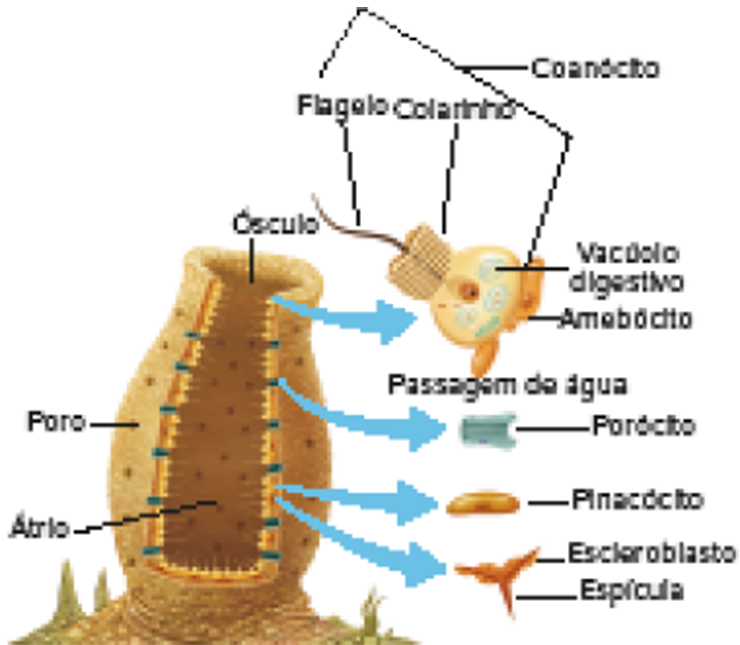
REECE, J. B. et al. Biologia de Campbell. 10. ed. Porto Alegre: Artmed, 2015.
Representação esquemática dos componentes estruturais e da organização corporal de um porífero
Estruturalmente, as esponjas são geralmente assimétricas e apresentam uma cavidade central, conhecida como
átrio ou espongiocele. Essa cavidade não se assemelha a uma cavidade digestória, já que nos poríferos não ocorre a gastrulação, e as células que revestem a região não secretam enzimas digestivas em
seu interior. Na porção superior e disposta centralmente, há uma abertura chamada ósculo, por onde sai a água que entra pelos poros. Apesar de não formarem tecidos verdadeiros – agrupamentos de células especializadas
que atuam em uniformidade e isoladamente de outros tecidos –, o corpo dos poríferos é formado por diversos tipos celulares que desempenham diferentes funções. Recobrindo o átrio se encontram os coanócitos, células
dotadas de flagelo parcialmente recoberto por um colarinho. O batimento coordenado e contínuo dessas estruturas celulares movimenta a água que entra pelos poros e, assim, possibilita a captura de partículas e nutrientes.
Na superfície voltada para o meio externo, encontra-se a epiderme recoberta pelos pinacócitos . Entre a camada externa e a interna do corpo dos poríferos, há uma região preenchida por uma substância gelatinosa
chamada de mesoílo, onde estão imersos outros tipos celulares. Conferindo estrutura e forma ao corpo das esponjas, existem inúmeras espículas, que podem ser calcárias ou silicosas. Além disso, células
conhecidas como espongioblastos produzem fibras proteicas que garantem a estruturação desses animais, sendo a espongina a principal proteína encontrada nos poríferos.
Os poros são delimitados por
células especializadas conhecidas como porócitos. E, dispersas pelo mesoílo, há várias células de formato ameboide responsáveis por executar diferentes funções. Dentre elas, destacamos os amebócitos,
cuja principal função é a digestão intracelular das partículas capturadas pelos coanócitos e encaminhadas até eles. Outras células de grande destaque encontradas entre as camadas de revestimento são os arqueócitos,
os quais funcionam como células-tronco e, portanto, são capazes de dar origem aos outros tipos celulares de acordo com a necessidade.
Tipos de estrutura corporal
Existem três aspectos morfológicos que as esponjas podem assumir: asconoide, siconoide e leuconoide. Elas se diferenciam quanto à complexidade do sistema aquífero, o qual pode ser dotado de maior ou menor quantidade
de dobras, alterando a área do átrio e também o fluxo de água.
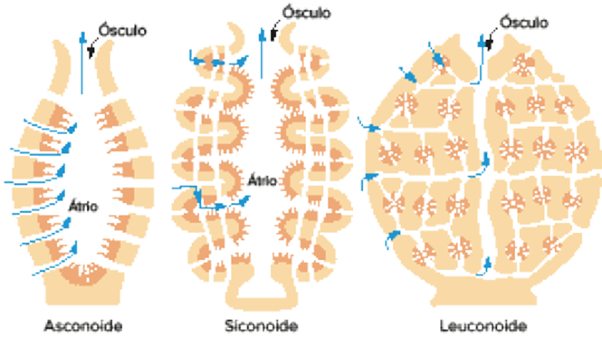
Fonte: Richard C. Brusca; Wendy Moore; Stephen M. Shuster. Invertebrados. 3. ed. Rio de Janeiro: Guanabara Koogan, 2013.
Representação esquemática dos tipos de estrutura corporal das esponjas.
Fisiologia
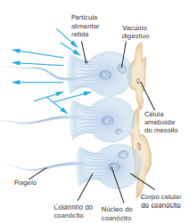
Fonte: Richard C. Brusca; Wendy Moore; Stephen M. Shuster. Invertebrados. 3. ed. Rio de Janeiro: Guanabara Koogan, 2013.
Representação esquemática dos coanócitos; o movimento dos flagelos cria o fluxo de água (setas
azuis) que possibilita as trocas gasosas, eliminação de toxinas e absorção de nutrientes.
Vida pelágica: modo de vida de animais que se deslocam pelo mar ou oceanos.
As esponjas apresentam uma grande diversidade de formas, tamanhos e cores. Na maioria das vezes, as cores são decorrentes das associações estabelecidas com bactérias e algas. Diante de determinadas condições ambientais,
as esponjas são capazes de alterar sua estrutura corporal, aumentando ou reduzindo o sistema de canais de corrente aquática, conhecido como sistema aquífero. Tal sistema é responsável pela distribuição de gás
oxigênio para as células que compõem o porífero e, do mesmo modo, é por ele que substâncias tóxicas e outros produtos do metabolismo celular podem ser eliminados do corpo do animal. Em decorrência da diversificação
dos canais que compõem o sistema aquífero, os poríferos são animais assimétricos. Em razão da inexistência de órgãos e sistemas especializados nesses animais, o processo de digestão se restringe à forma intracelular.
As partículas filtradas pelos coanócitos são parcialmente digeridas em vacúolos digestivos e, posteriormente, são transferidas aos amebócitos para o término da digestão. Devido à mobilidade dessas últimas células pelo
mesoílo, todas as demais células que compõem as esponjas recebem nutrientes
Filo Cnidaria
Além dos poríferos, outro grupo de animais de destaque no ambiente marinho é o filo Cnidaria (do grego kníde, que significa “urtiga”). Os representantes desse filo apresentam células características chamadas
cnidócitos. Os cnidários são caracterizados pela existência de alternância entre as formas de vida séssil e forma de vida pelágica, o que lhes assegura a ocupação de diferentes posições ecológicas, apesar de
serem estruturalmente semelhantes.
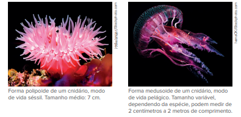
Estrutura
A estrutura corporal dos cnidários ainda se mantém bastante simplificada, principalmente em decorrência da simetria radial apresentada por esses animais. Contudo, eles são classificados como diblásticos, e foram
os primeiros a apresentar tecidos verdadeiros.
Externamente, o corpo desses animais é recoberto pela ectoderme, enquanto a endoderme possibilita a formação da gastrodeme, uma camada especializada no revestimento da cavidade gastrovascular (CGV). Entre essas duas camadas, encontra-se a mesogleia, uma substância gelatinosa que varia entre os membros desse filo quanto à presença de células especializadas e também quanto ao volume apresentado.
Os cnidócitos,
diferenciados a partir de cnidoblastos, são estruturas responsáveis pela proteção, defesa e auxílio na alimentação desses animais. Distribuídos por toda a epiderme e encontrados em maior concentração nos tentáculos, os cnidócitos
contam com um nematocisto , onde são produzidas substâncias urticantes capazes de imobilizar outros animais.
Veja a seguir a representação de uma situação na qual a região da epiderme de um cnidário (com os cnidócitos) entra em contato com a epiderme de outro animal.
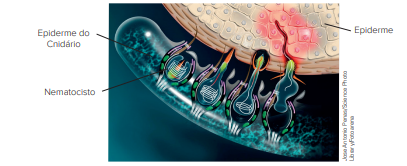
Representação do mecanismo de funcionamento do cnidócito; mecanismo de liberação das toxinas.
Quanto às formas de vida, os cnidários podem ser pólipos ou medusas.
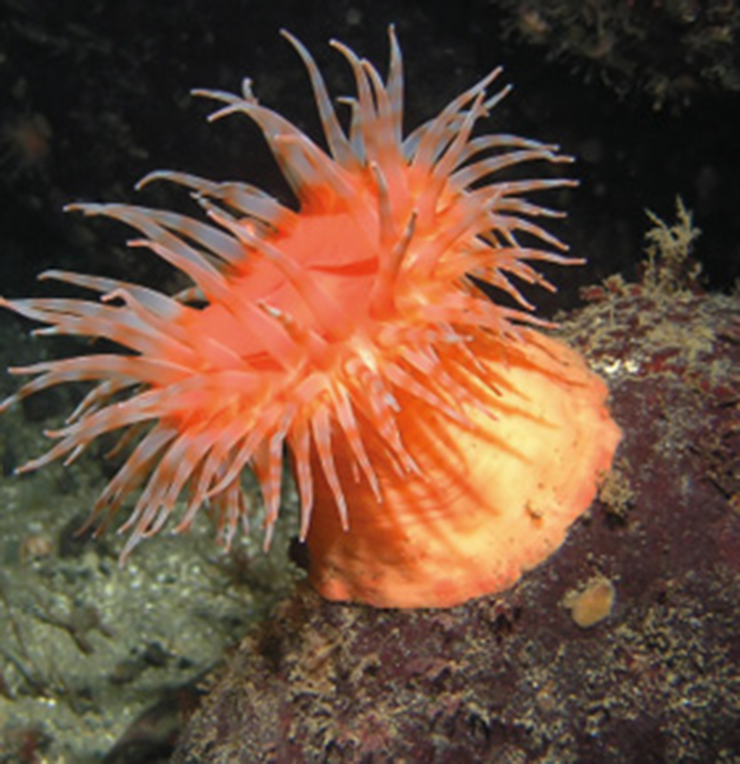
Anêmona-do-mar em vista lateral.
Tamanho médio: 7 cm.
Pólipos
A forma de vida polipoide consiste em organismos sésseis que se encontram, principalmente, na região bentônica e são muito mais diversos em comparação às medusas.
A extremidade oral do corpo cilíndrico abriga a boca,
que, originada a partir da diferenciação do blastóporo e rodeada por tentáculos, conecta a cavidade gastrovascular ao meio externo. Já a extremidade oposta, a aboral, fixa o organismo no substrato, formando, muitas
vezes, o disco pedal.
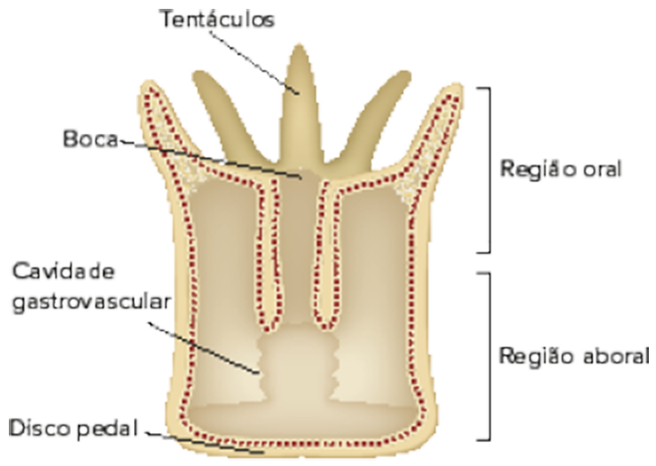
Fonte: Richard C. Brusca; Wendy Moore; Stephen M. Shuster. Invertebrados. 3. ed. Rio de Janeiro: Guanabara Koogan, 2013.
Representação esquemática da estrutura de um pólipo.
Os pólipos são agrupados, principalmente, no clado Anthozoa e podem viver de forma isolada, como as anêmonas-do-mar, ou formando colônias, como os corais-pétreos e as gorgônias.
As formas coloniais podem ser dotadas
de exoesqueleto ou endoesqueleto, que podem ser compostos de carbonato de cálcio ou elementos proteicos, como a gorgonina. Nos corais-pétreos, exemplificados pelo coral-cérebro, está presente o exoesqueleto calcário,
que protege e reveste o cnidário.
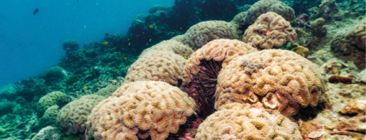
Corais-pétreos no mar da Província de Krabi, Tailândia.
A descoberta dos “corais da Amazônia”
Recentemente descoberto, os corais da Amazônia já haviam sido teorizados em meados de 1975, quando pesquisadores norte-americanos coletaram espécies de esponjas e peixes característicos de recifes. Por muito tempo, esse improvável
ecossistema se manteve descaracterizado, apesar de outros indícios parecerem indicar a sua real existência, como no caso do alto rendimento da pesca regional de lagostas e outros animais marinhos que costumam viver próximos
a recifes. Por definição, recifes são estruturas rígidas compostas da ação de inúmeros seres vivos, e o que se encontra na foz do Amazonas é uma extensa estrutura formada por algas que transformaram o carbonato de cálcio disponível
no oceano em um esqueleto que as permitiram se encrustar em rochas, as quais passam a ser conhecidas como rochas vivas ou rodolitos. É nesses rodolitos que outras espécies, como esponjas e corais, chegam, instalam-se e ali
dão continuidade à formação do recife, por anos e anos.
A grande questão levantada pela ONG Greenpeace é que esse ecossistema parece se distribuir por uma área bastante extensa e é alvo de exploração de recursos por empresas
petroleiras. Além da presença do recife, a região oferece condições adversas para a exploração de petróleo, não tendo muito sucesso nas tentativas de perfuração. Porém, algumas das empresas mantêm seu interesse no local e,
por não citarem a existência do recife, têm tido suas licenças negadas pelo Ibama. Alguns pesquisadores, entretanto, permanecem céticos quanto à ocorrência e extensão desse ecossistema, alegando um equívoco por parte da ONG
e ressaltando o gigantesco retrocesso econômico ao impedir a exploração petroleira na região. Diante do apresentado e buscando mais informações em plataformas de busca:
• Elabore, inicialmente, uma justificativa para que
o termo “corais da Amazônia” esteja cientificamente incorreto.
• Argumente também sobre as preocupações de se explorar uma região que ainda parece guardar muitos mistérios sobre a real diversidade ali presente.
Região planctônica: trata-se da região superficial dos mares e oceanos.
Medusas
Semelhantes a um guarda-chuva aberto, as medusas são circulares e apresentam uma superfície superior convexa (exumbrela) e uma inferior côncava (subumbrela), na qual se dispõe a boca. Se comparada a um pólipo, a medusa
se assemelha a um em posição inversa.
As formas medusoides são encontradas, normalmente, deslocando- -se pela região planctônica. Sua locomoção é garantida pelo movimento de jato-propulsão que expulsa a
água após a contração do corpo, projetando assim o animal para a direção oposta.
Nos cnidários medusoides, a mesogleia costuma ser muito mais espessa do que a encontrada nos pólipos e, por essa razão, esses animais
são comumente chamados de águas-vivas.
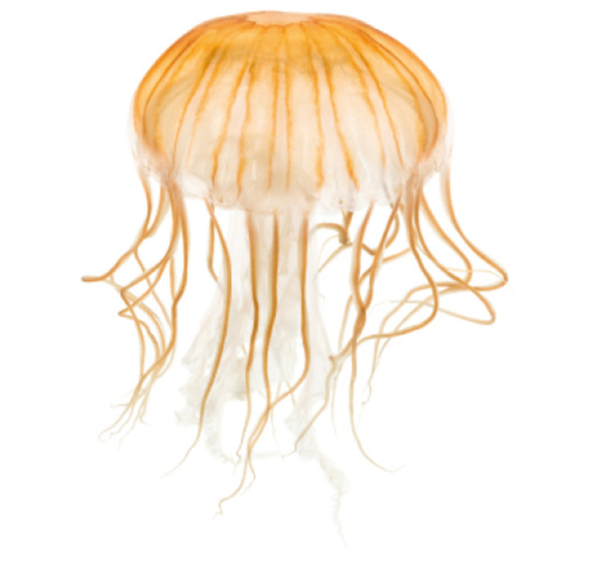
Medusa com tentáculos.
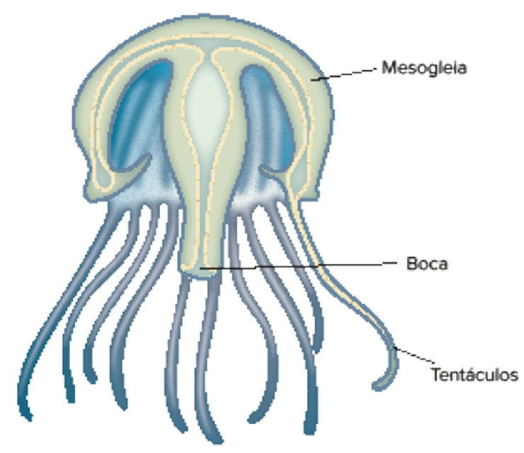
Fonte: Richard C. Brusca; Wendy Moore; Stephen M. Shuster. Invertebrados. 3. ed. Rio de Janeiro: Guanabara Koogan, 2013.
Representação esquemática da estrutura da forma medusoide.
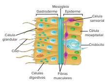
Fonte: Richard C. Brusca; Wendy Moore; Stephen M. Shuster. Invertebrados. 3. ed. Rio de Janeiro: Guanabara Koogan, 2013.
Representação esquemática da disposição das células no corpo de um cnidário em vista lateral.
Fisiologia
De modo geral, os cnidários são animais predadores que utilizam dos tentáculos e dos nematocistos para capturarem e levarem a presa até a boca, onde é ingerida. Devido à presença de células secretoras de enzimas na gastroderme,
inicia-se a digestão extracelular e, por existirem células ciliadas nessa camada que reveste a cavidade gastrovascular, o material é movimentado e completamente digerido. Outro conjunto de células, as células
nutritivo-musculares, capturam as moléculas orgânicas por endocitose e completam o processo por meio da
digestão intracelular.
A cavidade gastrovascular também atua no transporte de nutrientes e excretas produzidas pelas células, já que nesses animais não se encontra presente um sistema circulatório independente.
Da mesma forma, não estão presentes os sistemas excretor e respiratório e, portanto, as trocas gasosas e a eliminação de excretas ocorrem nas superfícies interna e externa do animal, por meio de difusão.
Considerada
a simetria radial dos cnidários, o sistema nervoso apresentado por esses animais se mostra bastante simplificado, sendo difuso e não centralizado.
Reprodução
Os cnidários apresentam os dois tipos de reprodução, a assexuada e a sexuada. Eles apresentam alta capacidade regenerativa, da qual se apropriam para gerar todo um novo organismo após sofrerem algum tipo de fissão corpórea ou mesmo
após reestruturarem alguma parte que, porventura, tenha sido danificada. O brotamento é também uma forma de reprodução assexuada apresentada por esses animais, ou seja, células da superfície do pólipo se desenvolvem em pequenos
brotos que podem se desprender e constituir novos indivíduos.
O ciclo de vida dos cnidários é marcado pela capacidade de alternância
de gerações, isto é, uma forma polipoide se alterna com o estágio medusoide, o qual, por ser capaz de realizar a reprodução sexuada, originando a larva plânula após o encontro dos gametas. Em algumas classes, os pólipos dão
origem a jovens medusas, também chamadas de éfiras, por meio de uma fissão transversal, também chamada estrobilação ou estrobilização, da região oral do pólipo, conhecido por cifístoma.
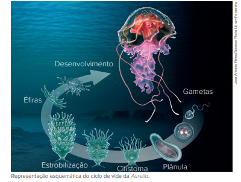
Das formas medusoides, destacam-se os cnidários conhecidos como hidrozoários, cifozoários, cubozoários e estaurozoários. Desses, a Obelia sp. é um dos representantes caracterizados pela ocorrência de alternância de geração em seu
ciclo de vida.
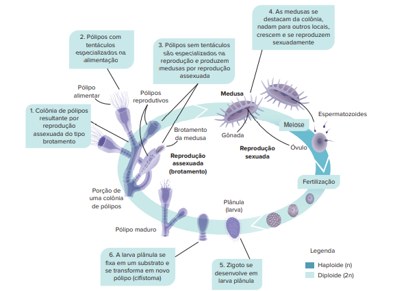
REECE, J. B. et al. Biologia de Campbell. 10. ed. Porto Alegre: Artmed, 2015.
Representação esquemática do ciclo de vida da Obelia sp.
1
Unicamp-SP Alguns hidrozoários coloniais, como a Obelia sp., ocorrem na natureza sob forma de pólipos e medusas.
- Como uma colônia destes hidrozoários se origina? E como esta colônia dá origem a novas colônias?
- Que estrutura comum aos pólipos e medusas é encontrada somente neste filo? Qual sua função?
Resolução:
- A colônia dos hidrozoários é originada por brotamento, uma forma de reprodução assexuada que ocorre nos pólipos. Novas colônias podem ser produzidas a partir da estrobilação, na qual pólipos adultos dão origem a medusas. Estas,
por sua vez, dotadas da capacidade de reprodução sexuada, dão origem à larva plânula, que se fixa no substrato e então inicia, por brotamento, a formação de uma nova colônia de Obelia sp
- Cnidócitos. Devido à presença de substâncias urticantes, é uma célula de defesa que auxilia na captura de alimentos.

Aplicando conhecimentos
1
Diferencie animais parazoários de enterozoários.
3
Diferencie pólipos de medusas e exemplifique cada um deles.
4
Observe a imagem a seguir.
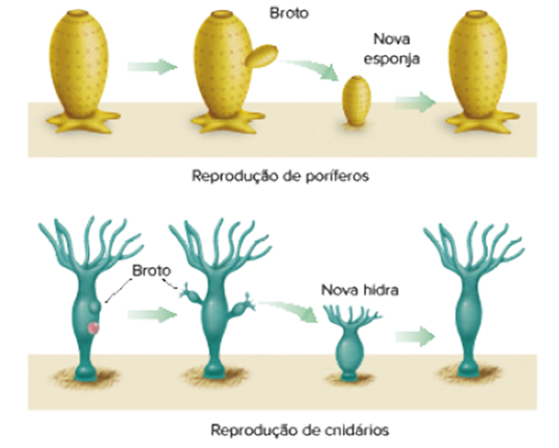
A reprodução ilustrada na imagem é comum em poríferos e cnidários. Qual é o nome desse tipo de reprodução? Explique como ela ocorre e justifique se é um tipo de reprodução sexuada ou assexuada.
5
Qual a função dos amebócitos, pinacócitos e porócitos dos poríferos?
6
Qual a função da toxina presente no nematocisto?
CONSOLIDANDO SABERES
1
OBB 2017 A tirinha abaixo se refere a um integrante bastante simples do Reino Animal
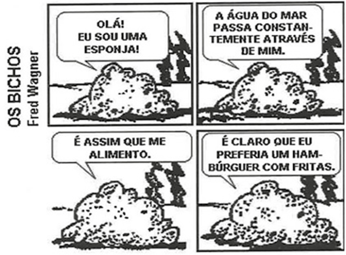
O desejo da esponja, expresso no último quadro, não pode se realizar. Nos demais grupos animais, a maior capacidade de obtenção de alimentos se relaciona:
- à presença de celoma.
- à respiração anaeróbica
- ao sistema excretor desenvolvido.
- à digestão extracelular.
- à simetria bilateral.
2
PUC-Rio Corais em todo o mundo estão sofrendo de um fenômeno conhecido como branqueamento, que consiste na perda de algas unicelulares que vivem no interior dos tecidos, podendo ocasionar a morte desses animais. Sobre
o tipo de interação entre os corais e as algas é correto afirmar que:
- é uma interação de parasitismo, pois as algas vivem no interior dos corais.
- é uma relação desarmônica interespecífica, pois os corais predam as algas
- é uma relação harmônica intraespecífica, pois animais e algas formam colônias.
- é uma interação de mutualismo onde as algas fornecem gás carbônico para os corais e estes fornecem glicose para as algas.
- é uma interação de mutualismo, onde as algas fornecem boa parte do alimento para os corais e estes fornecem sais minerais e gás carbônico.
3
OBB 2017 Os cnidários são animais que podem apresentar alternância de gerações, também conhecida como metagênese. Neste processo, dois estágios de vida são encontrados; os pólipos e as medusas. Sobre o assunto, foram
feitas as afirmações a seguir:
- os pólipos são normalmente sésseis e as medusas, de natação livre
- os pólipos representam o estágio larval e as medusas, a fase adulta
- na metagênese, os pólipos e as medusas se reproduzem de forma assexuada e sexuada, respectivamente
- apenas as medusas têm células urticantes, denominadas cnidócitos.
apenas as medusas têm células urticantes, denominadas cnidócitos.
- I e II, apenas.
- III e IV, apenas.
- I e III, apenas.
- I e III, apenas.
- I e IV, apenas.
4
Apesar de estes animais pertencerem ao mesmo filo, existem diferenças entre eles. Cite uma característica que diferencie:
- um coral de uma água-viva.
- uma anêmona-do-mar de um coral.
5
Os espongioblastos e os escleroblastos são células presentes nos poríferos, responsáveis pela sustentação do corpo desses animais. Os espongioblastos produzem a espongina e, em algumas esponjas, os escleroblastos produzem espículas
de sílica ou calcário. Em relação a esses componentes, responda:
- Explique duas funções das espículas de sílica ou calcário.
- Por que as esponjas cujo esqueleto era composto apenas de espongina costumavam ser utilizadas para banho?
6
Bob Esponja é uma série de animação que conta a história de uma esponja-do-mar (Bob Esponja Calça Quadrada) e seus amigos, que vivem em uma cidade subaquática chamada Fenda do Biquíni. Apesar de seu criador ser um biólogo marinho,
Bob é dotado de características que não são comuns aos membros do filo ao qual pertencem as esponjas. Uma dessas características é a:
- simetria radial.
- fibras de espongina.
- coanócitos.
- presença de poros.
- capacidade de locomoção.
7
Unicamp-SP 2021 Os recifes de coral constituem importantes ecossistemas do planeta, oferecendo abrigo, áreas de desova e proteção contra predadores, e são o hábitat de organismos na base das cadeias alimentares oceânicas.
Considerando os conhecimentos de Biologia, é correto afirmar que os corais
- com organização corporal polipoide são animais fixos ao substrato, com reprodução sexuada, e os com organização medusoide correspondem aos animais móveis, com reprodução assexuada.
- têm vários tentáculos junto à boca, compostos por cnidoblastos, os quais são células dotadas de flagelos que auxiliam na movimentação da água para favorecer a filtração do alimento e trocas gasosas.
- são animais triblásticos, pois em sua fase embrionária distinguem-se três folhetos embrionários (endoderme, mesoderme e ectoderme), com ausência do celoma e presença de disco basal.
- têm duas superfícies epiteliais, a epiderme, que reveste externamente o animal, e a gastroderme, que delimita a cavidade gastrovascular; entre elas, encontram-se células pertencentes à mesogleia.
Um mergulhador profissional pretende montar um grande aquário em sua casa contendo apenas uma espécie de cnidário do gênero Obelia. Nessa espécie, o ciclo reprodutivo ocorre com alternância de gerações (metagênese). O mergulhador
tem a intenção de formar uma população de cnidários com indivíduos geneticamente uniformes em seu aquário. Para garantir essa uniformidade genética, o mergulhador deve coletar em mar aberto
- apenas duas medusas de sexos opostos.
- um único pólipo adulto.
- uma única éfira.
- vários óvulos e espermatozoides.
- diversas larvas plântulas.
SUPERAÇÃO
1
OBB 2018 Durante milhares de anos, as pessoas tiraram partido da capacidade da natureza para produzir remédios que tratassem doenças e perturbações. Em algumas partes do mundo, os medicamentos naturais ainda são os
únicos tratamentos disponíveis. A investigação científica sobre esses medicamentos naturais levou à descoberta de químicos purificados, cujas propriedades benéficas proporcionaram a base da atual indústria farmacêutica.
Os oceanos são uma fonte rica em diversidade tanto biológica como química. Os produtos naturais marinhos podem fornecer estruturas químicas únicas e pouco habituais sobre as quais se pode basear a modelação molecular e
a síntese química de novos fármacos. A halicondrina, extraída das esponjas, ganhou prioridade máxima nos testes contra uma grande variedade de células tumorais incluindo melanomas, leucemia, cânceres de mama e próstata.
Ela inibe a polimerização dos microtúbulos. Os animais do filo que produz o fármaco citado no texto apresentam:
- solenócitos e sistema digestório incompleto.
- cnidócitos e digestão extracelular.
- três folhetos germinativos e deuterostomia.
- mesoderme e protostomia.
- coanócitos e digestão intracelular.

No enem é assim
As questões selecionadas nesta seção são prioritariamente do Enem, mas questões de vestibulares diversos que apresentam características semelhantes aos itens do referido exame também foram usadas como recurso para estudo.
1
PUC-PR 2018 O reino animal é composto por indivíduos multicelulares, heterótrofos, eucariotos e com desenvolvimento embrionário pelo menos até a fase de blástula. Como a diversidade desse reino é imensa, é possível dividi-lo
em filos ou ramos. Suponha que um pesquisador queira encontrar um determinado animal ou grupo de animais utilizando palavras ou termos chaves. Para facilitar a busca, ele poderia utilizar
- as palavras parazoários e coanócitos – certamente encontraria as esponjas.
- a palavra segmentação – encontraria unicamente invertebrados.
- as palavras esquizocelomados e protostômios – encontraria somente nematódeos.
- palavras deuterostômios e enterocelomados – encontraria indivíduos com exoesqueleto quitinoso.
- palavras pseudocelomados e diblásticos – encontraria cnidários ou poríferos.
2
Os filmes de animação e os desenhos animados têm grande diversidade de personagens pertencentes ao reino Animal, como o leão Simba, de Rei Leão, o peixe-palhaço Nemo, de Procurando Nemo, o pássaro tropical Kevin, de Up – Altas
Aventuras, a coelha Judy, de Zootopia, o rato Remy, de Ratatouille, e a estrela-do-mar Patrick, de Bob Esponja. Apesar das grandes diferenças entre as personagens, todos esses animais são:
- triblásticos, celomados e protostômios.
- diblásticos, celomados e deuterostômios.
- triblásticos, celomados e deuterostômios.
- triblásticos, pseudocelomados e deuterostômios.
- diblásticos, pseudocelomados e protostômios.
3
Mackenzie-SP 2019 A figura abaixo apresenta cortes transversais de embriões animais, indicando seus três folhetos germinativos.
Foram feitas afirmativas a respeito dos três tipos de embrião.
- A figura A refere-se aos cnidários, animais triblásticos sem cavidade celomática.
- Na figura B observa-se uma cavidade pseudocelomática, revestida parcialmente por mesoderme.
- A figura C representa, exclusivamente, animais esquizocelomados e protostômios.
- As letras A, B e C podem representar o desenvolvimento embrionário de uma planária, uma lombriga e uma minhoca, respectivamente
São verdadeiras as afirmativas
- I, II, III e IV
- I, II e III, apenas.
- II e III, apenas.
- I e III, apenas.
- II e IV, apenas.
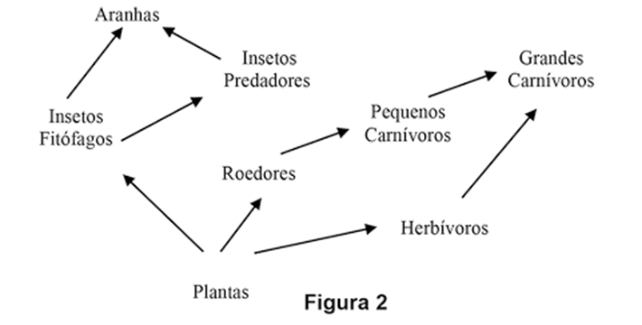
Na cadeia alimentar, mostrada na Figura 2, são citados diferentes grupos animais. Com relação às características embriológicas destes grupos, assinale a alternativa que apresenta uma que é comum a todos.
- Acelomados
- Simetria radial
- Notocorda
- Triblásticos
- Ovo oligolécito
5
Uece 2017 Os seres vivos incluídos no Filo Porifera não apresentam tecidos ou órgãos definidos, mas possuem células que realizam diversas funções relacionadas à sua sobrevivência no ambiente aquático. Com relação aos
coanócitos, células que compõem o corpo dos poríferos, é correto afirmar que
- são responsáveis pela distribuição de substâncias para todas as demais células do corpo do animal, por meio de plasmodesmos.
- transformam-se em espermatozoides, sendo, portanto, essenciais para a reprodução sexuada nesses animais.
- são células totipotentes que originam todos os outros tipos de células que compõem os tecidos desses animais.
- são células flageladas que promovem o fluxo contínuo de água, promovendo a nutrição desses animais, pela a circulação da água no átrio da esponja.